Labels
General knowledge about labels¶
Extended label: You will notice quite fast that you have more or less information on a label depending if you hover your mouse on it or not. When you move your mouse over the label, it will extend and show more information. This is called the extended label, and corresponds to the right label in this documentation.
Label definition Switzerland¶
There is a lot to cover in this part, as IVAC2 offers the possibility to customize the labels until the smallest detail. That's why this part of the documentation is particularly important, so make sure you read it carefully.
In Switzerland we created our labels in order to match the real ones used by Skyguide. There are some small differences, as we had to adapt some functions for IVAO.
What has been customized ?
First of all, the symbols of the track are different depending on different situations (VFR, IFR, concerned, and so on).
Then, you have to know that we have 2 label formats in Switzerland.
One is for Enroute Control, the other for Arrival/Departure Control. The Ground labels are common for both definitions, they are composed of following categories:
-
Ground Default
-
Ground Departure traffic
-
Ground Arrival traffic
-
Ground Vehicle
The Airborne labels are composed of following categories:
-
Airborne psr (sqwk SBY)
-
Airborne default (default airborne label)
-
Airborne concerned (label when your sector has been set NEXT)
-
Airborne assumed (assumed label)
-
Airborne filtered (label when filter is active)
-
Airborne released (released label)
We will cover all of them in this document, as the labels we have in IVAC2 have nothing to do with the ones of IVAC1.
Symbols¶
The symbols are the easiest part, as there are only 3 different symbols.
used for VFR traffic or psr traffic (transponder off or on sby)
used for IFR flights
used for concerned traffic. That means that if a controller is putting your position as next, the symbol will change to this circle. This means that the next controller of this traffic will be you.
Ground Default¶
Basic actions:
A left mouse click on the callsign will open the callsign menu
A right mouse click on the callsign will open the FPL
A double click on the callsign will assume or transfer the label to the controller set as “next”.
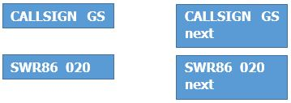
The default ground label will be display when the system is not able to define if the traffic is departure or arrival, for example when there is no FPL filled.
Ground Departure traffic¶
Basic actions:
A left mouse click on the callsign will open the callsign menu
A right mouse click on the callsign will open the FPL
A double click on the callsign will assume or transfer the label to the controller set as “next”.
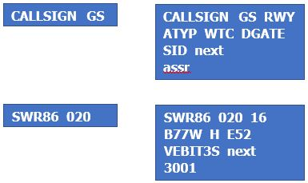
Need to know
RWY, SID and ASSR are filled in automatically as soon as you use the DCL Tool (Datalink clearance).
DGATE is optional, you can fill it in if you want but it is not mandatory.
next will display the next controller position name or frequency (see NEXT FREQ paragraph). It has to be set by you if the next controller is online, otherwise the transfer of label will not work. If there is no controller online, you can leave it blank and release the traffic on UNICOM when needed.
assr is the assigned transponder, which you entered into the DCL Tool
Ground Arrival traffic¶
Basic actions:
A left mouse click on the callsign will open the callsign menu
A right mouse click on the callsign will open the FPL
A double click on the callsign will assume or transfer the label to the controller set as “next”.
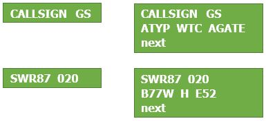
Need to know
AGATE is optional, you can fill it in if you want but it is not mandatory.
next will display the next controller position name or frequency (see NEXT FREQ paragraph). It has to be set by you if the next controller is online, otherwise the transfer of label will not work. If there is no controller online, you can leave it blank and release the traffic on UNICOM when needed.
Ground Vehicle¶
Not used in Switzerland for the moment
Airborne psr¶
Basic actions:
A left mouse click on the callsign will open the callsign menu.
Right mouse click unused.
Double click unused.
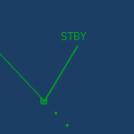
Need to know
The psr label will only show STBY, to indicate that the transponder is either standby or off. You can perform no action on this label, except open the callsign menu.
Airborne default¶
Basic actions:
A left mouse click on the callsign will open the callsign menu.
A right mouse click on the callsign will draw the route filled in the flightplan, using the centralized AIRAC Data.
A double click on the callsign will assume the label.
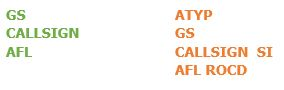
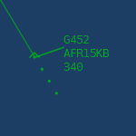 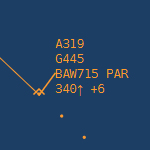
Need to know
AFL is the actual Flight Level.
ROCD is the actual Rate Of Climb/Descent.
SI will display the controller that assumed the traffic, in this example it is PAR (Paris). It will always display the IATA Code of the airfield (ZRH = Zurich, GVA = Geneva, BRN = Bern, etc...) or a 3 letter code for ACC sectors (PAR = Paris, LAN = Langen, PAD = Padova, MIL = Milano, MAR = Marseille).
Airborne concerned¶
Basic actions:
A left mouse click on the callsign will open the callsign menu.
A right mouse click on the callsign will draw the route filled in the flightplan, using the centralized AIRAC Data.
A double click on the callsign will assume the label.
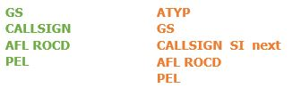
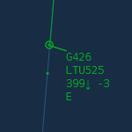 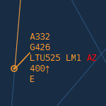
Need to know
AFL is the actual Flight Level.
ROCD is the actual Rate Of Climb/Descent.
SI will display the controller that assumed the traffic, in this example it is PAR (Paris). It will always display the IATA Code of the airfield (ZRH = Zurich, GVA = Geneva, BRN = Bern, etc...) or a 3 letter code for ACC sectors (PAR = Paris, LAN = Langen, PAD = Padova, MIL = Milano, MAR = Marseille).
next will display your position, as you are set as the "next" controller.
PEL will display the sector entry level, which is the level at which the traffic will enter into your sector as cleared by the previous controller.
Airborne assumed¶
Basic actions:
A left mouse click on the callsign will open the callsign menu.
A right mouse click on the callsign will open the flightplan.
A double click on the callsign will transfer the label to the controller set as “next”.
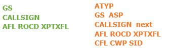
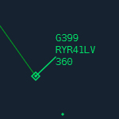 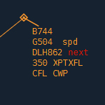
Need to know
AFL is the actual Flight Level.
ROCD is the actual Rate Of Climb/Descent.
ASP is the assigned speed. Left click on ASP to assign a speed or mach number.
next will display the next controller position name or frequency (see NEXT FREQ paragraph). It has to be set by you if the next controller is online, otherwise the transfer of label will not work. If there is no controller online, you can leave it blank and release the traffic on UNICOM when needed.
XPT is the transfer waypoint, which is the waypoint where the traffic will leave your sector (according to LOA). Right click on XPT to draw the route filled in the flightplan.
XFL is the transfer Flight Level, which is the FL at which the traffic has to be when leaving your sector (according to LOA).
CFL is the cleared FL. Left click on CFL to assign a FL.
CWP is the cleared waypoint. Left click on CWP to assign a waypoint.
SID will display the cleared SID. It will only display a SID if a it has been set via the DCL Tool.
Airborne filtered¶
Basic actions:
A left mouse click on the callsign will open the callsign menu.
A right mouse click on the callsign will disply the flightplan.
A double click on the callsign will assume the label.
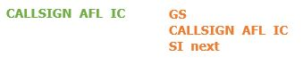
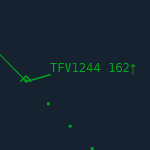 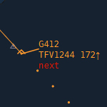
Need to know
AFL is the actual Flight Level.
IC is the climb/descent arrow.
SI will display the controller that assumed the traffic, in this example it is PAR (Paris). It will always display the IATA Code of the airfield (ZRH = Zurich, GVA = Geneva, BRN = Bern, etc...) or a 3 letter code for ACC sectors (PAR = Paris, LAN = Langen, PAD = Padova, MIL = Milano, MAR = Marseille).
next will display the next controller position name or frequency (see NEXT FREQ paragraph).
Airborne released¶
Basic actions:
A left mouse click on the callsign will open the callsign menu.
A right mouse click on the callsign will draw the route filled in the flightplan, using the centralized AIRAC Data.
A double click on the callsign will assume or transfer the label to the controller set as “next”.
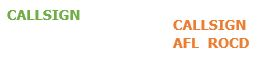
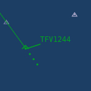 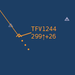
Need to know
AFL is the actual Flight Level.
ROCD is the actual Rate Of Climb/Descent.
Sector Abreviations used¶
Switzerland
ZRH = Zurich
GVA = Geneva
BRN = Bern
ACH = St-Gallen Altenrhein
SIR = Sion
SMV = Samedan
LUG = Lugano
SMV = Samedan
ZHI = Grenchen
ZHW = Les Eplatures
Neighbours
PAR = Paris Control
REI = Reims Control
MAR = Marseille Control
LAN = Langen Radar
RHE = Rhein Radar
MUC = Munchen Radar
MIL = Milano Radar
PAD = Padova Radar
BSL = Basel